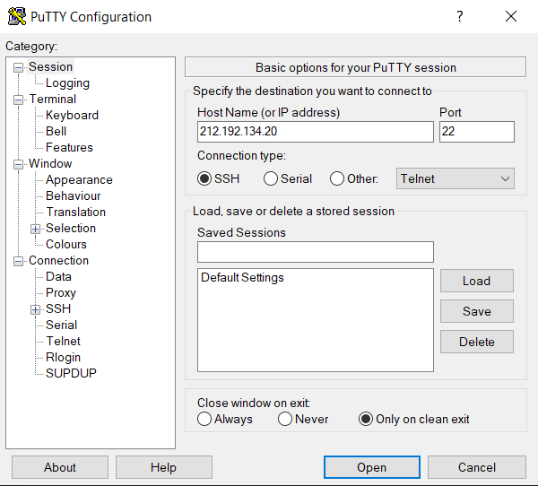
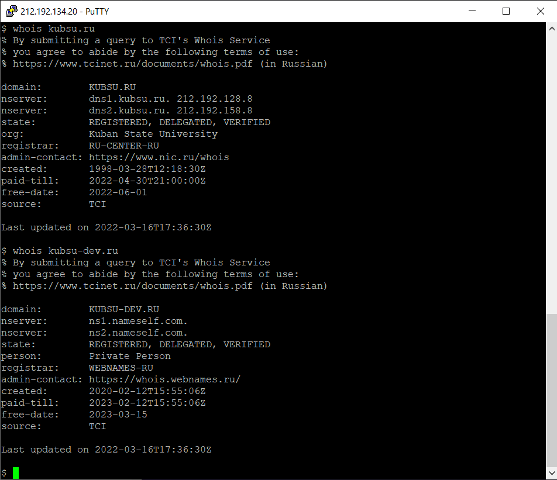

Подключение к учебному серверу 212.192.134.20 по SSH с помощью клиента Putty.
Вызов команды ping. Отправляет пакеты по протоколу ICMP на выбранный сервер для
проверки качества соединения с ним. IP сервера kubsu. ru 212.192.128.92
Вызов команды nslookup. Это инструмент сетевого администрирования для запросов в доменной
системе имен (DNS) с целью получения доменного имени, IP-адреса или другой информации
из записей DNS.
Вызов команды whois. Вывод информации о домене и его владельце
Клонирование репозитория из GitHub на сервер командой git clone
FTP (протокол передачи данных по сети) соединение через программу FileZilla. Копирование
файлов находящихся на сервере на локальный компьютер